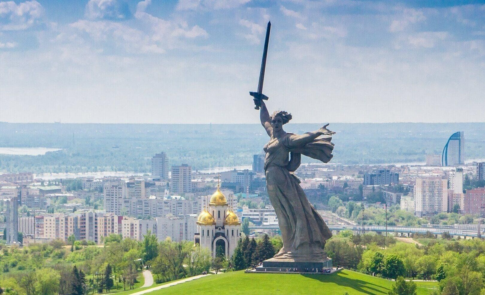

ㅤВолгоград (Сталинград)
ㅤСталинградская битва стала переломным моментом в Великой Отечественной войне. Город был практически полностью разрушен, но защитники одержали победу.
ㅤГород-герой, символ мужества и стойкости
ㅤВолгоград, ранее известный как Сталинград, стал одним из самых значимых символов Великой Отечественной войны. Этот город навсегда вошёл в историю благодаря ожесточённым боям, невероятному героизму его защитников и переломному моменту в ходе всей войны — Сталинградской битве. История Волгограда во время войны — это история трагедии, но также и триумфа человеческого духа.
ㅤВойна для Сталинграда началась летом 1942 года, когда немецкие войска под командованием генерала Фридриха Паулюса начали наступление на южные регионы СССР. Город был стратегически важным пунктом, так как через него проходили пути к Каспийскому морю и богатым нефтяным месторождениям.
ㅤКроме того, Сталинград был назван в честь Иосифа Сталина, и его захват имел не только военное, но и символическое значение для нацистской Германии. Немцы стремились взять город любой ценой, но встретили здесь упорное сопротивление.
ㅤПереломный момент: контрнаступление и победа
ㅤПосле нескольких месяцев ожесточённых боёв советские войска перешли в контрнаступление. 19 ноября 1942 года началась операция "Уран" , в ходе которой немецкая группировка была окружена в районе Сталинграда. 2 февраля 1943 года остатки немецкой армии во главе с генералом Паулюсом капитулировали.
ㅤСталинградская битва стала переломным моментом в ходе Великой Отечественной войны. Она показала, что нацисты могут быть побеждены, и придала уверенность всему советскому народу.
ㅤТрагедия и возрождение
ㅤТрагедия Сталинграда заключалась не только в масштабах разрушений, но и в страданиях мирного населения. Город был почти полностью разрушен, а его жители подвергались бомбардировкам, обстрелам и голоду. Тем не менее, даже в таких условиях люди не сложили оружие.
ㅤПосле битвы город лежал в руинах, но его жители сразу же начали восстанавливать его. Они строили дома, заводы и дороги, чтобы вернуть городу его прежний облик. Восстановление Сталинграда стало символом не только физического возрождения, но и духовного подъёма всего советского народа.
ㅤПамять о подвиге
ㅤСегодня Волгоград — это современный город, который продолжает развиваться, но никогда не забывает свою историю. Здесь созданы музеи, памятники и мемориалы, которые хранят память о тех днях.
ㅤОсобое место занимает Мамаев курган , где установлен монумент "Родина-мать зовёт!" . Этот памятник стал символом не только Волгограда, но и всей России. Ежегодно тысячи людей приезжают сюда, чтобы почтить память защитников города.